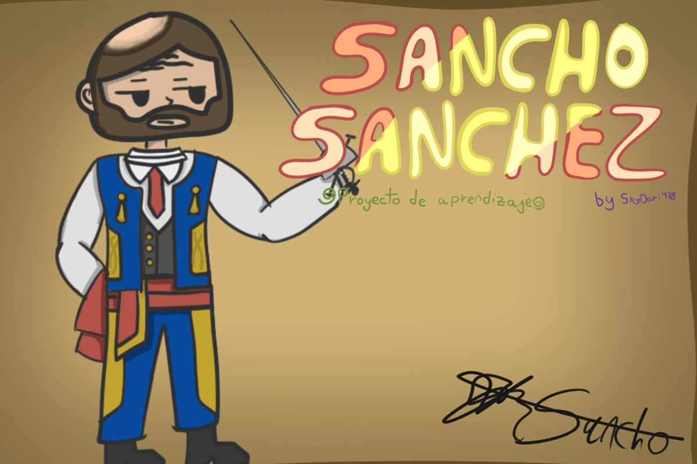
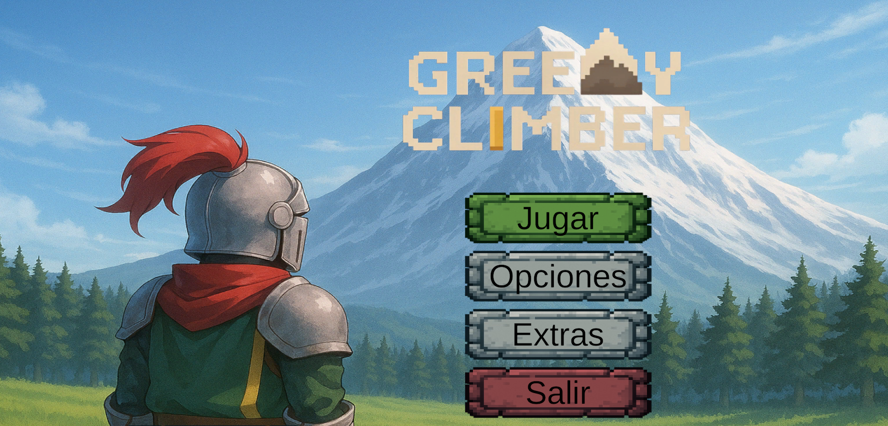
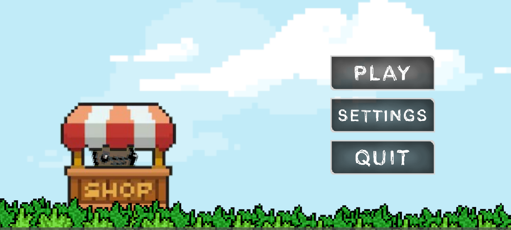

Darío RG — Estudiante de informática
Estudiante de informática con pasión por la creación de videojuegos, especializado en Unity y tratando de entretener a la mayor cantidad de gente.
Sobre mí
Mi nombre es Darío Rodríguez Gelo, tengo 18 años y estoy actualmente estudiando DAW (Desarrollo de Aplicaciones web). La creación de videojuegos me interesa desde hace bastantes años, y he creado algunos proyectos pequeños para aprender. Recientemente al fin he podido comenzar a hacer prototipos jugables, aunque cortos.
Mi sueño es poder crear un juego al mas puro estilo de Fire Emblem, compartir una historia inmersiva y un estilo táctico. Aunque aún me queda un gran camino por recorrer para esto, y quiero aprender de la mayor cantidad de tipos de juego posible.
2
Juegos publicados3
Proyectos de Aprendizaje1
Años de experiencia5
Lenguajes / motoresDónde he estudiado
No sería capaz de listarlos absolutamente todos, pero quitando los estudios oficiales, me he formado muchisimo siguiendo tutoriales y cursos gratis en línea.
SMR (Sistemas Microinformáticos y Redes)
IES Ruiz Gijón.
Un paso clave para entender bases de programación, y además formarme en las prácticas formativas, asi como aprender sobre redes, seguridad, servidores...
Curso de C# para principiantes
OpenWebinars.
Ya que Unity utiliza este lenguaje, pense que sería buena idea tomar este curso. Me enseñó cosas bastante utiles, aunque muchas de ellas ya las conocía de antemano.
DAW (Desarrollo de Aplicaciones Web)
IES Ruiz Gijón.
Estudio la creación de aplicaciones web, enfocándome en tecnologías modernas y mejores prácticas de desarrollo.
Conocimientos
Lenguajes y Tecnologias
Motores y Frameworks
Herramientas
Otros conocimientos
Mis juegos
Actualmente solo uno esta verdaderamente subido y terminado, el resto son mas... Proyectos propios para aprender a programar.

Sancho Sanchez
Un juego corto de acción, totalmente programado y dibujado por mí. El único proyecto verdaderamente terminado de mi colección

Greedy Climber
Fue mi primer juego publicado, cuando aún intentaba aprender los fundamentos de la programación. Parte del arte fue generado con IA.

Snowball Monkey
Un juego estilo bullet hell en el que compras mejoras conforme avanzan los niveles, que escalan como bola de nieve, cada vez más y más.
¿Quieres contactarme?
Si te interesa escribirme por cualquier cuestión, puedes hacerlo a través de cualquiera de estos medios.
Si por el contrario quieres verme hablar un poco de mi trayectoria, ¡puedes entrar en este vídeo!